Chapitre 10 Exercice de synthèse
10.1 Enoncé
Créer un un sous-jeu de données constitué des 15 premières colonnes de la base Insee restreint à la région des Pays-de-la-Loire (code REG 52). Supprimer les modalités inutiles des variables qualitatives.
10.1.1 Partie 1
L’objectif est de bien décrire la variable de population issue du recensement 2014.
Produire un graphique simple pour décrire la distribution.
Calculer les statistiques simples décrivant cette variable.
On a des indicateurs de tendance centrale qui sont très différents. Pourquoi ?
Quel est le nombre de communes de moins de 1000 habitants ?
Produire un graphique plus riche que le précédent.
Produire un graphique comparant les distributions entre les départements des Pays-de-la-Loire.
10.1.2 Partie 2
En 2014, la population communale moyenne en Pays-de-la-Loire est-elle upérieure ou inférieure à la population communale moyenne nationale ?
Cette différence est-elle significative au seuil de 5% ?
Aide : Réfléchir aux questions :
un ou deux échantillons ?
test paramétrique ou non paramétrique ?
La population moyenne diffère-t-elle entre PDL et Centre-val-de-Loire ?
10.2 Corrigé
Les questions étant ouvertes, il y a de nombreuses façons d’y répondre. Ci-dessous certaines d’entre elles.
Créer un sous-jeu de données constitué des 15 premières colonnes de la base Insee restreint à la région des Pays-de-la-Loire (code REG 52)
## CODGEO LIBGEO REG DEP
## Length:1502 Length:1502 52 :1502 Length:1502
## Class :character Class :character 01 : 0 Class :character
## Mode :character Mode :character 02 : 0 Mode :character
## 03 : 0
## 04 : 0
## 11 : 0
## (Other): 0
## ZAU ZE P14_POP P09_POP
## Length:1502 Length:1502 Min. : 12 Min. : 17
## Class :character Class :character 1st Qu.: 495 1st Qu.: 481
## Mode :character Mode :character Median : 1029 Median : 978
## Mean : 2720 Mean : 2608
## 3rd Qu.: 2353 3rd Qu.: 2243
## Max. :298029 Max. :282047
## NA's :145 NA's :145
## SUPERF NAIS0914 DECE0914 P14_MEN
## Min. : 0.20 Min. : 1.0 Min. : 0.0 Min. : 5.45
## 1st Qu.: 11.76 1st Qu.: 33.0 1st Qu.: 15.0 1st Qu.: 196.52
## Median : 17.96 Median : 69.0 Median : 31.0 Median : 402.51
## Mean : 23.64 Mean : 166.3 Mean : 113.1 Mean : 1183.32
## 3rd Qu.: 28.53 3rd Qu.: 147.0 3rd Qu.: 107.0 3rd Qu.: 952.00
## Max. :323.98 Max. :19814.0 Max. :9968.0 Max. :155272.72
## NA's :145 NA's :145 NA's :145 NA's :145
## NAISD15 DECESD15 P14_LOG
## Min. : 0.00 Min. : 0.00 Min. : 11.45
## 1st Qu.: 5.00 1st Qu.: 3.00 1st Qu.: 246.94
## Median : 12.00 Median : 7.00 Median : 483.02
## Mean : 30.99 Mean : 24.96 Mean : 1427.59
## 3rd Qu.: 26.00 3rd Qu.: 23.00 3rd Qu.: 1108.68
## Max. :4011.00 Max. :2146.00 Max. :171979.65
## NA's :145 NA's :145 NA's :145On a toujours les anciens codes régions et départements qui sont désormais inutiles.
## CODGEO LIBGEO DEP ZAU
## Length:1502 Length:1502 Length:1502 Length:1502
## Class :character Class :character Class :character Class :character
## Mode :character Mode :character Mode :character Mode :character
##
##
##
##
## ZE P14_POP P09_POP SUPERF
## Length:1502 Min. : 12 Min. : 17 Min. : 0.20
## Class :character 1st Qu.: 495 1st Qu.: 481 1st Qu.: 11.76
## Mode :character Median : 1029 Median : 978 Median : 17.96
## Mean : 2720 Mean : 2608 Mean : 23.64
## 3rd Qu.: 2353 3rd Qu.: 2243 3rd Qu.: 28.53
## Max. :298029 Max. :282047 Max. :323.98
## NA's :145 NA's :145 NA's :145
## NAIS0914 DECE0914 P14_MEN NAISD15
## Min. : 1.0 Min. : 0.0 Min. : 5.45 Min. : 0.00
## 1st Qu.: 33.0 1st Qu.: 15.0 1st Qu.: 196.52 1st Qu.: 5.00
## Median : 69.0 Median : 31.0 Median : 402.51 Median : 12.00
## Mean : 166.3 Mean : 113.1 Mean : 1183.32 Mean : 30.99
## 3rd Qu.: 147.0 3rd Qu.: 107.0 3rd Qu.: 952.00 3rd Qu.: 26.00
## Max. :19814.0 Max. :9968.0 Max. :155272.72 Max. :4011.00
## NA's :145 NA's :145 NA's :145 NA's :145
## DECESD15 P14_LOG
## Min. : 0.00 Min. : 11.45
## 1st Qu.: 3.00 1st Qu.: 246.94
## Median : 7.00 Median : 483.02
## Mean : 24.96 Mean : 1427.59
## 3rd Qu.: 23.00 3rd Qu.: 1108.68
## Max. :2146.00 Max. :171979.65
## NA's :145 NA's :14510.2.1 Partie 1
Objectif : bien décrire la variable population communale (P14_POP)
Quelle est la population moyenne des communes de la région ?
## [1] 2720Quelle est la la médiane ?
## [1] 1029On a deux indicateurs de tendance centrale qui sont très différents. Pourquoi ?
Quel est le nombre de communes de moins de 1000 habitants ?
## [1] 664L’histogramme de base …
graphique <- ggplot (data = pdl, aes (x = P14_POP)) +
geom_histogram () +
geom_vline (xintercept = pop_med_pdl, color = 'orange') +
geom_vline (xintercept = pop_moy_pdl, color = 'green')
graphique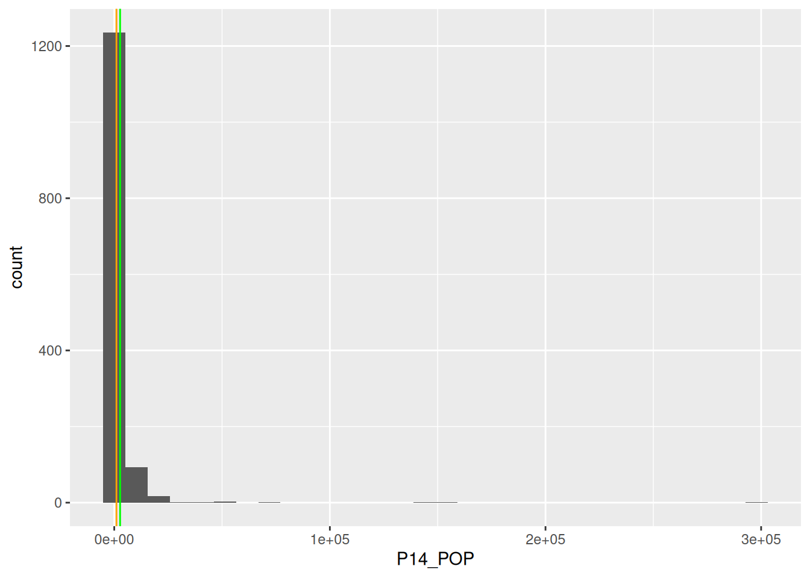
… n’est pas bien lisible. Un peu de mise en forme s’impose.
graphique <- graphique +
scale_x_continuous (trans = 'log10',
labels = function(x) format(x, big.mark = " ", scientific = F),
breaks = c(10, 100, 1000, 10000, 100000)) +
xlab ('Population, échelle log') +
ylab ('Nombre de communes')
graphique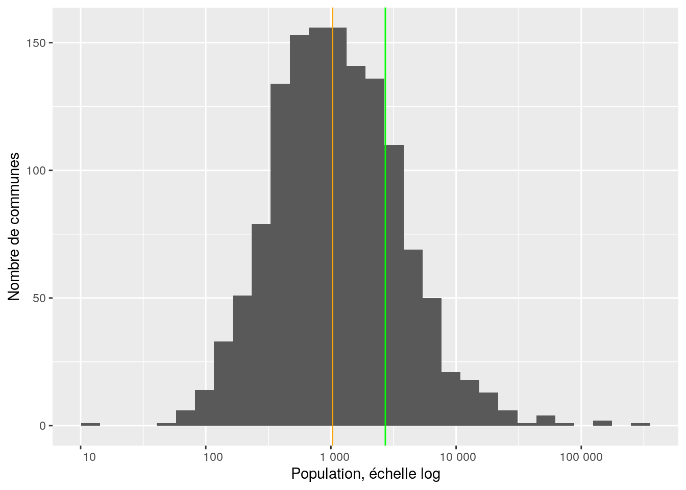
On peut encore rendre le graphique plus “auto-porteur”.
graphique <- graphique +
annotate (geom = 'text', x = pop_med_pdl-200, y = 50,
label = paste ('Médiane', ':', pop_med_pdl, 'hab.'),
angle = 90, color = 'orange') +
annotate (geom = 'text', x = pop_moy_pdl-500, y = 50,
label = paste ('Moyenne', ':', pop_moy_pdl, 'hab.'),
angle = 90, color = 'green')
graphique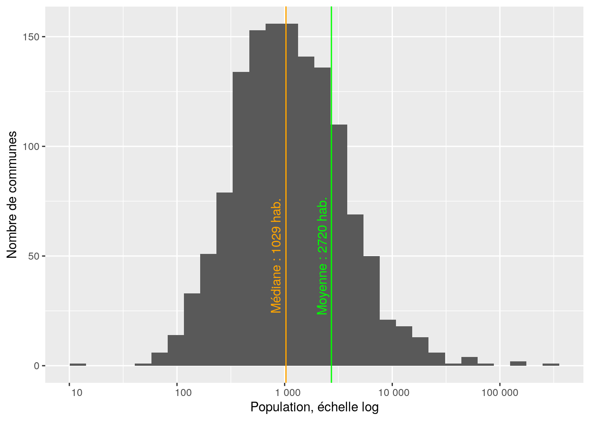
Produire un graphique comparant les distributions entre les départements des Pays-de-la-Loire
medianes <- pdl %>%
group_by (DEP) %>%
summarise (pop_med = median (P14_POP, na.rm = T))
pdl <- inner_join (x = pdl, y = medianes)## Joining with `by = join_by(DEP)`ggplot (data = pdl, aes (x = fct_reorder (DEP, pop_med), y = P14_POP)) +
geom_boxplot (fill = 'orange') +
scale_y_continuous (trans = 'log10',
breaks = c(10, 100, 1000, 10000, 100000),
labels = function(x) format(x, big.mark = " ", scientific = FALSE)) +
xlab ('Département') +
ylab ('Population') +
ggtitle ('Région Pays-de-la-Loire')## Warning: Removed 145 rows containing non-finite outside the scale range
## (`stat_boxplot()`).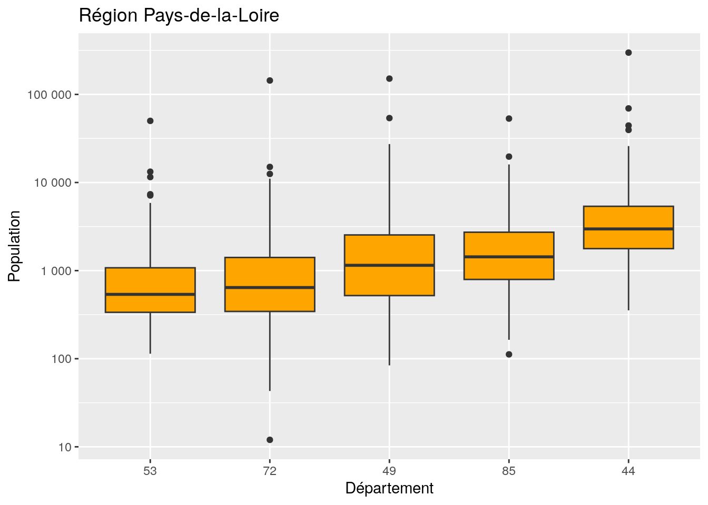
10.2.2 Partie 2
La population moyenne en Pays-de-la-Loire diffère-t-elle de la moyenne nationale ?
## [1] 1837Cette différence est-elle significative au seuil de 5% ? Réfléchir aux questions : - un ou deux échantillons ? - test paramétrique ou non paramétrique ?
On peut déjà comparer graphique les distributions PDL et hors PDL
dat <- dat %>%
mutate (groupe = ifelse (REG == '52', 'PDL', 'Hors_PDL'))
ggplot (data = dat, aes (x = P14_POP, group = groupe, fill = groupe)) +
geom_density (alpha = 0.5) +
scale_x_continuous (trans = 'log10', labels = function(x) format (x, big.mark = " ", scientific = F)) +
xlab ('Population, échelle log') +
ylab ('Densité')## Warning in scale_x_continuous(trans = "log10", labels = function(x) format(x, :
## log-10 transformation introduced infinite values.## Warning: Removed 827 rows containing non-finite outside the scale range
## (`stat_density()`).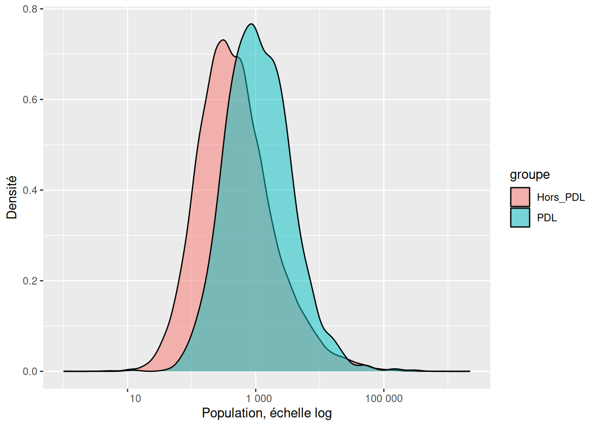
Alors, un ou deux échantillons ?
Si l’on considère 2 échantillons :
##
## Two Sample t-test
##
## data: P14_POP by groupe
## t = -2.2175, df = 35866, p-value = 0.0266
## alternative hypothesis: true difference in means between group Hors_PDL and group PDL is not equal to 0
## 95 percent confidence interval:
## -1727.6282 -106.4727
## sample estimates:
## mean in group Hors_PDL mean in group PDL
## 1802.797 2719.847##
## Welch Two Sample t-test
##
## data: P14_POP by groupe
## t = -3.0193, df = 1572.4, p-value = 0.002575
## alternative hypothesis: true difference in means between group Hors_PDL and group PDL is not equal to 0
## 95 percent confidence interval:
## -1512.814 -321.287
## sample estimates:
## mean in group Hors_PDL mean in group PDL
## 1802.797 2719.847##
## Wilcoxon rank sum test with continuity correction
##
## data: P14_POP by groupe
## W = 14420160, p-value < 2.2e-16
## alternative hypothesis: true location shift is not equal to 0Si l’on considère 1 échantillon :
##
## One Sample t-test
##
## data: pdl$P14_POP
## t = 3.0164, df = 1356, p-value = 0.002605
## alternative hypothesis: true mean is not equal to 1837
## 95 percent confidence interval:
## 2145.694 3294.001
## sample estimates:
## mean of x
## 2719.847##
## Wilcoxon signed rank test with continuity correction
##
## data: pdl$P14_POP
## V = 343305, p-value = 4.264e-16
## alternative hypothesis: true location is not equal to 1837On peut faire plein de tests ; à chaque fois R donne un résultat, mais le(s)quel(s) choisir ?
Ici la moyenne nationale n’est pas calculée sur un échantillon : elle l’est sur l’exhaustivité des communes. C’est donc la moyenne sur la population. Notre problème est donc la comparaison de la moyenne d’un échantillon unique avec la moyenne de la population.
Comme les distributions sont très asymétriques donc non gaussiennes, on ne peut pas lire les tests de Student. C’est donc le test de Wilcoxon qui nous indique une différence significative au seuil de 5%. Conclusion : Les communes de la région comptent en moyenne significativement plus d’habitants que celles de la France entière. Il est peu probable qu’il s’agisse d’un effet du hasard, donc les populations des communes des PDL ne sont pas distribuées comme celles des autres communes de France.
La population moyenne diffère-t-elle entre PDL et Centre-val-de-Loire ?
Traduire : Si je regroupe les communes des PDL + de CVDL (1502 + 1842) puis que je répartis aléatoirement ces communes dans deux groupes, est-il possible que par un effet du hasard, les distributions des deux groupes diffèrent autant que diffèrent celles observées dans les deux régions ?
Centre-val-de-Loire : code 24
cvdl <- dat %>%
select (1:15) %>%
filter (REG == "24")
pop_moy_cvdl <- cvdl %>%
pull (P14_POP) %>%
mean (na.rm = T) %>%
round ()
pop_med_cvdl <- cvdl %>%
pull (P14_POP) %>%
median (na.rm = T) %>%
round ()A quoi ressemble la distribution en Centre-val-de-Loire ?
ggplot (data = cvdl, aes (x = P14_POP)) +
geom_histogram () +
geom_vline (xintercept = pop_med_cvdl, color = 'orange') +
geom_vline (xintercept = pop_moy_cvdl, color = 'green') +
scale_x_continuous (trans = 'log10',
labels = function (x) format(x, big.mark = " ", scientific = F),
breaks = c (10, 100, 1000, 10000, 100000)) +
xlab ('Population, échelle log') +
ylab ('Nombre de communes') +
annotate (geom = 'text', x = pop_med_cvdl-200, y = 50,
label = paste ('Médiane', ':', pop_med_cvdl, 'hab.'),
angle = 90, color = 'orange') +
annotate (geom = 'text', x = pop_moy_cvdl-500, y = 50,
label = paste ('Moyenne', ':', pop_moy_cvdl, 'hab.'),
angle = 90, color = 'green')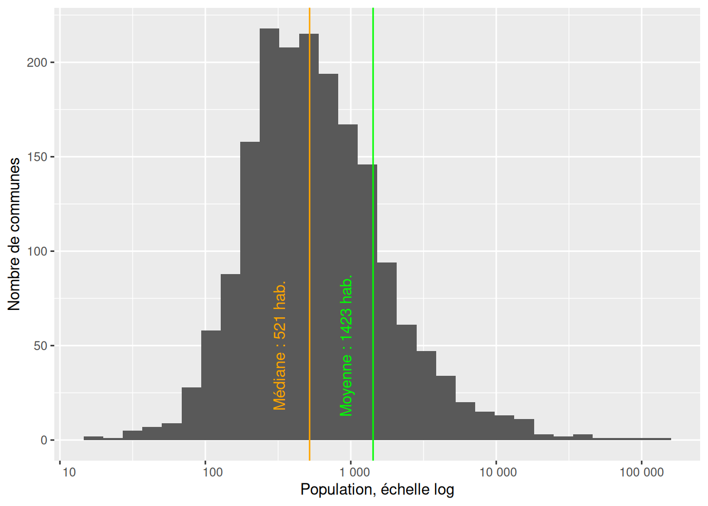
Tester la significativité
##
## Wilcoxon rank sum test with continuity correction
##
## data: P14_POP by REG
## W = 824661, p-value < 2.2e-16
## alternative hypothesis: true location shift is not equal to 0Pas de surprise, la différence est très significative. A noter, que “p-value < 2.2e-16” est un message qui apparaît souvent : c’est une valeur “plancher” et il ne sert à rien d’aller voir plus loin au microscope des valeurs encore plus faibles.
10.2.3 Partie 3
Combien de communes par département dans les Pays-de-Loire ?
##
## 44 49 53 72 85
## 221 363 261 375 282Quelle est la population communale moyenne par département dans la région ?
pop_com_moy_dept <- pdl %>% group_by (DEP) %>%
summarise (pop_moy_dept = round (mean (P14_POP, na.rm = T)))
pop_com_moy_dept ## # A tibble: 5 × 2
## DEP pop_moy_dept
## <chr> <dbl>
## 1 44 6352
## 2 49 3224
## 3 53 1192
## 4 72 1546
## 5 85 2461Est-ce que la ventilation des communes dans les catégories de ZAU diffère selon les départements de la région PDL ?
croisement <- table (pdl$DEP, pdl$ZAU)
DEP_vs_ZAU <- croisement %>%
as.data.frame () %>%
spread (key = Var1, value = Freq) %>%
rename (ZAU = Var2)
DEP_vs_ZAU## ZAU 44 49 53 72 85
## 1 111 - Grand pôle (plus de 10 000 emplois) 40 22 7 27 12
## 2 112 - Couronne d'un grand pôle 102 166 65 157 45
## 3 120 - Multipolarisée des grandes aires urbaines 26 31 20 59 50
## 4 211 - Moyen pôle (5 000 à 10 000 emplois) 8 2 4 1 8
## 5 212 - Couronne d'un moyen pôle 12 5 21 2 4
## 6 221 - Petit pôle (de 1 500 à 5 000 emplois) 6 27 5 14 17
## 7 222 - Couronne d'un petit pôle 0 0 4 4 0
## 8 300 - Autre commune multipolarisée 27 83 80 90 106
## 9 400 - Commune isolée hors influence des pôles 0 27 55 21 40## Warning in chisq.test(croisement): Chi-squared approximation may be incorrect##
## Pearson's Chi-squared test
##
## data: croisement
## X-squared = 316.14, df = 32, p-value < 2.2e-16Problème : il y a dans certaines cases du tableau de contingence des effectifs inférieurs à 5. On va doc créer des regroupements :
- 111 et 112 (grands pôles)
- 120 et 300 (multipolarisées)
- 211 212 221 22 et 400 (rural ou petits pôles)
## NULLpdl <- pdl %>%
mutate (ZAU_regroupees = fct_collapse (ZAU, 'Grand pôle' = levels (pdl$ZAU)[1:2],
'Multipolarisées' = levels (pdl$ZAU)[c(3,8)],
'Rurales et petits pôles' = levels (pdl$ZAU)[c(4:7,9)]))
croisement <- table (pdl$DEP, pdl$ZAU_regroupees)
DEP_vs_ZAU_regroupees <- croisement %>%
as.data.frame () %>%
spread (key = Var1, value = Freq) %>%
rename (ZAU = Var2)
DEP_vs_ZAU_regroupees## ZAU 44 49 53 72 85
## 1 111 - Grand pôle (plus de 10 000 emplois) 40 22 7 27 12
## 2 112 - Couronne d'un grand pôle 102 166 65 157 45
## 3 120 - Multipolarisée des grandes aires urbaines 26 31 20 59 50
## 4 211 - Moyen pôle (5 000 à 10 000 emplois) 8 2 4 1 8
## 5 212 - Couronne d'un moyen pôle 12 5 21 2 4
## 6 221 - Petit pôle (de 1 500 à 5 000 emplois) 6 27 5 14 17
## 7 222 - Couronne d'un petit pôle 0 0 4 4 0
## 8 300 - Autre commune multipolarisée 27 83 80 90 106
## 9 400 - Commune isolée hors influence des pôles 0 27 55 21 40## Warning in chisq.test(croisement): Chi-squared approximation may be incorrect##
## Pearson's Chi-squared test
##
## data: croisement
## X-squared = 316.14, df = 32, p-value < 2.2e-16Il y a bien un lien enter les variables ZAU_regroupees et DEP. Si l’on veut en savoir plus on peut comparer les effectifs observés dans le tableau de contingence aux effectifs attendus si les variables étaient indépendantes l’une de l’autre.
predict <- t (round (test$expected)) %>% as.data.frame ()
names (predict) = paste0 (names (predict), 'p')
prov <- bind_cols (x = DEP_vs_ZAU_regroupees, y = predict)
prov## ZAU
## 111 - Grand pôle (plus de 10 000 emplois) 111 - Grand pôle (plus de 10 000 emplois)
## 112 - Couronne d'un grand pôle 112 - Couronne d'un grand pôle
## 120 - Multipolarisée des grandes aires urbaines 120 - Multipolarisée des grandes aires urbaines
## 211 - Moyen pôle (5 000 à 10 000 emplois) 211 - Moyen pôle (5 000 à 10 000 emplois)
## 212 - Couronne d'un moyen pôle 212 - Couronne d'un moyen pôle
## 221 - Petit pôle (de 1 500 à 5 000 emplois) 221 - Petit pôle (de 1 500 à 5 000 emplois)
## 222 - Couronne d'un petit pôle 222 - Couronne d'un petit pôle
## 300 - Autre commune multipolarisée 300 - Autre commune multipolarisée
## 400 - Commune isolée hors influence des pôles 400 - Commune isolée hors influence des pôles
## 44 49 53 72 85 44p 49p 53p
## 111 - Grand pôle (plus de 10 000 emplois) 40 22 7 27 12 16 26 19
## 112 - Couronne d'un grand pôle 102 166 65 157 45 79 129 93
## 120 - Multipolarisée des grandes aires urbaines 26 31 20 59 50 27 45 32
## 211 - Moyen pôle (5 000 à 10 000 emplois) 8 2 4 1 8 3 6 4
## 212 - Couronne d'un moyen pôle 12 5 21 2 4 6 11 8
## 221 - Petit pôle (de 1 500 à 5 000 emplois) 6 27 5 14 17 10 17 12
## 222 - Couronne d'un petit pôle 0 0 4 4 0 1 2 1
## 300 - Autre commune multipolarisée 27 83 80 90 106 57 93 67
## 400 - Commune isolée hors influence des pôles 0 27 55 21 40 21 35 25
## 72p 85p
## 111 - Grand pôle (plus de 10 000 emplois) 27 20
## 112 - Couronne d'un grand pôle 134 100
## 120 - Multipolarisée des grandes aires urbaines 46 35
## 211 - Moyen pôle (5 000 à 10 000 emplois) 6 4
## 212 - Couronne d'un moyen pôle 11 8
## 221 - Petit pôle (de 1 500 à 5 000 emplois) 17 13
## 222 - Couronne d'un petit pôle 2 2
## 300 - Autre commune multipolarisée 96 72
## 400 - Commune isolée hors influence des pôles 36 2710.2.4 Partie 4
Y a-t-il un lien entre la densité de population et le taux d’emploi en région PDL ?
On crée un sous-jeu de données ad hoc.
data_p4 <- dat %>%
select (1:15, P09_EMPLT) %>%
filter (REG == '52') %>%
mutate (taux_emploi = P09_EMPLT / P09_POP,
densite_pop = P14_POP / SUPERF)
summary(data_p4$taux_emploi)## Min. 1st Qu. Median Mean 3rd Qu. Max. NA's
## 0.00979 0.13147 0.18493 0.24570 0.29610 1.59801 145Avant de regarder le lien entre les deux variables, on les examine chacune à leur tour.
ggplot (data = data_p4, aes (x = taux_emploi)) +
geom_histogram () +
scale_x_continuous (limits = c(0, 1))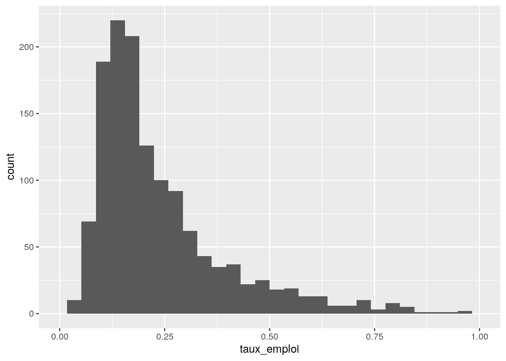
ggplot (data = data_p4, aes (x = densite_pop)) +
geom_histogram () +
scale_x_continuous (trans = 'log', breaks = c(1,10,100,1000))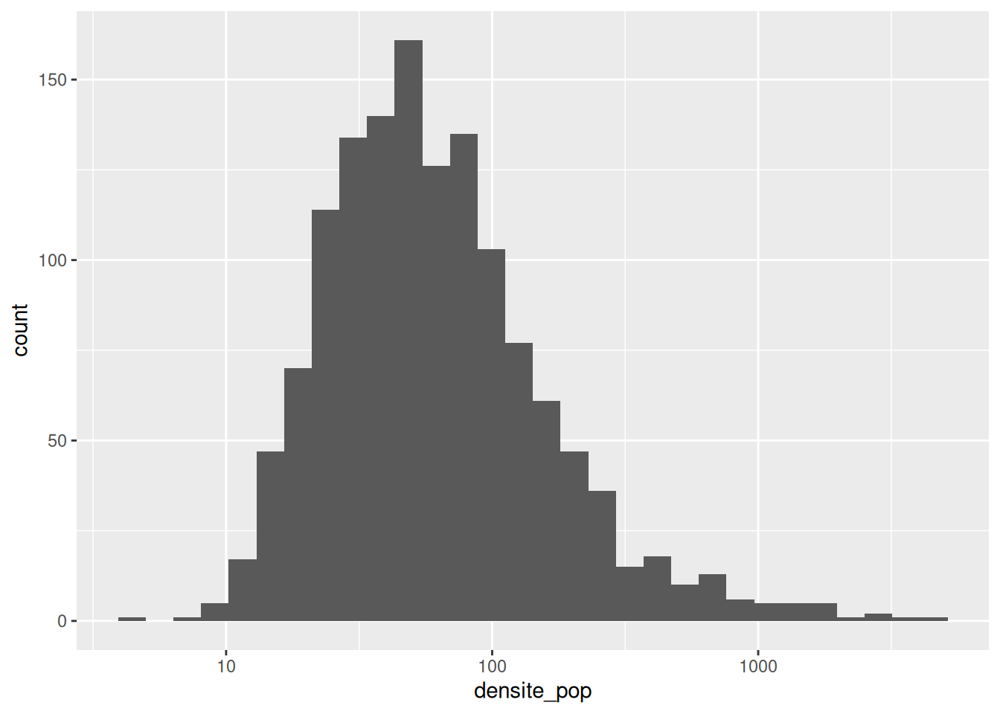
Ces distributions ne sont pas trop normales à première vue. Mais en testant ?
##
## Shapiro-Wilk normality test
##
## data: data_p4$taux_emploi
## W = 0.77523, p-value < 2.2e-16##
## Shapiro-Wilk normality test
##
## data: data_p4$densite_pop
## W = 0.31672, p-value < 2.2e-16C’est confirmé -> en toute rigueur, test non paramétrique. On regarde aussi le nuage de points.
ggplot (data=data_p4, aes (x = densite_pop, y = taux_emploi)) +
geom_point () +
scale_x_continuous (trans = 'log10') +
scale_y_continuous (trans = 'log10') +
geom_smooth (color = 'orange')+
geom_smooth (method = 'lm', color = 'blue')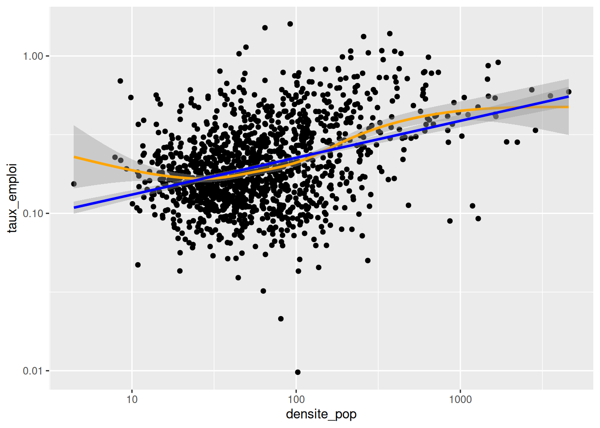
cor (x = data_p4$taux_emploi,
y = data_p4$densite,
use = "pairwise.complete.obs",
method = "spearman")## [1] 0.3121057Conclusion : Le coefficient de corrélation est positif, faible mais non négligeable. Les variables tendent à varier dans le même sens.
Est-ce que la variable densite contribue significativement à expliquer la variabilité de la variable taux_emploi ?
Pour répondre à cette question, on est bien embêtés dans un cadre non paramétrique. Pour l’approcher, on peut donc faire comme si on n’avait pas vu que les distrubutions des variables n’étaient pas normales.
##
## Call:
## lm(formula = log(taux_emploi) ~ log(densite_pop), data = data_p4)
##
## Residuals:
## Min 1Q Median 3Q Max
## -3.14328 -0.37613 -0.02266 0.36720 2.00382
##
## Coefficients:
## Estimate Std. Error t value Pr(>|t|)
## (Intercept) -2.56785 0.06862 -37.42 <2e-16 ***
## log(densite_pop) 0.23434 0.01625 14.42 <2e-16 ***
## ---
## Signif. codes: 0 '***' 0.001 '**' 0.01 '*' 0.05 '.' 0.1 ' ' 1
##
## Residual standard error: 0.5732 on 1355 degrees of freedom
## (145 observations deleted due to missingness)
## Multiple R-squared: 0.133, Adjusted R-squared: 0.1323
## F-statistic: 207.8 on 1 and 1355 DF, p-value: < 2.2e-16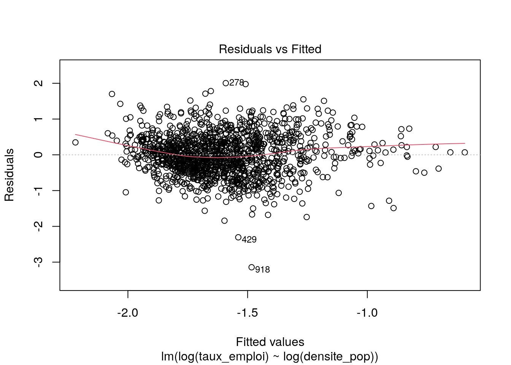
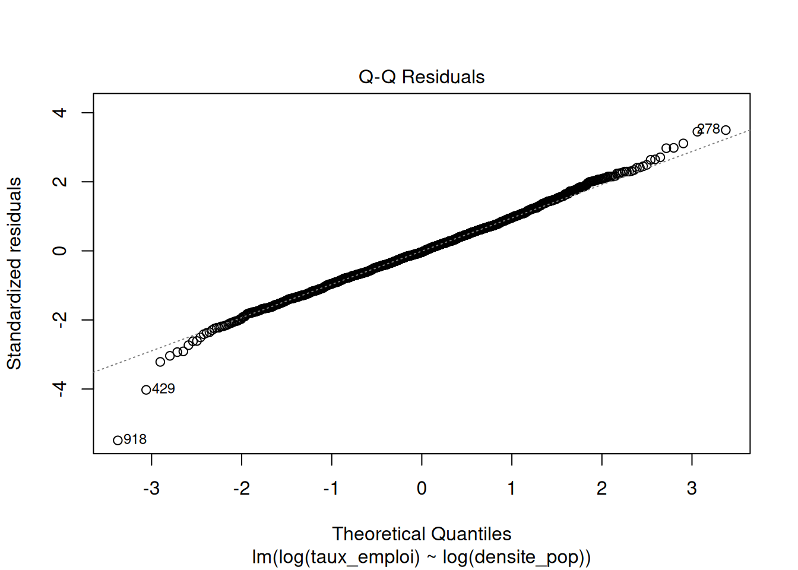
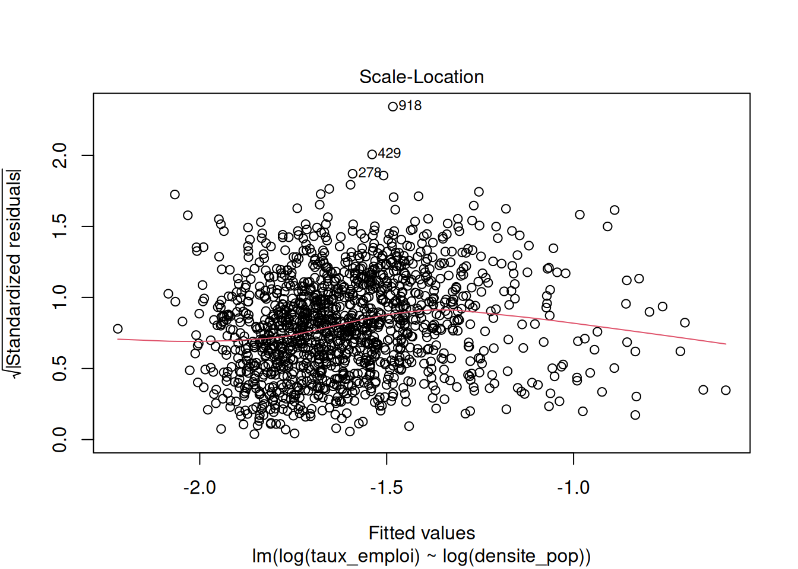
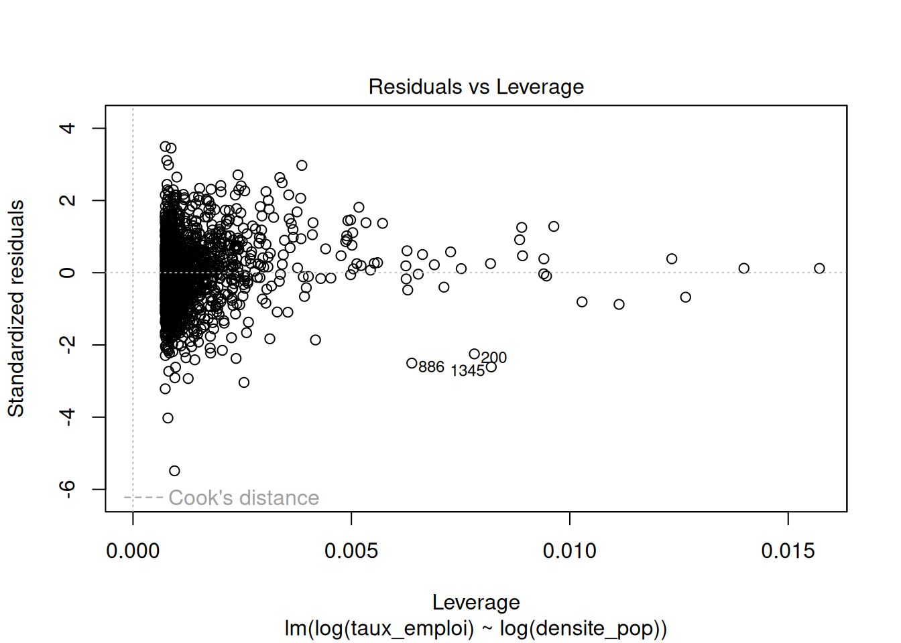
residus <- modele$residuals %>%
as.data.frame () %>%
rename (valeurs_residus = '.')
ggplot (data = residus, aes (x = valeurs_residus)) +
geom_histogram () +
geom_vline (xintercept = 0, color = 'red')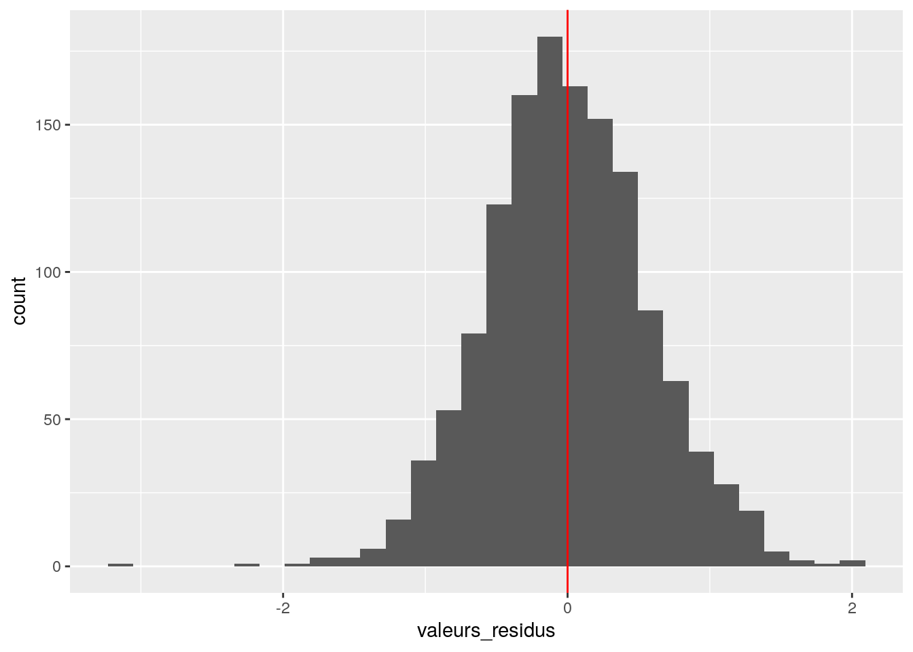
Les graphiques montrent que :
on a à peu près indépendance entre les valeurs prédites et les résidus
les résidus sont à peu près distribués normalement avec une distribution centrée en zéro
on a quelques points avec des bras de leviers (distance de Cook) importants, mais le modèle les prédit bien.
Donc ce modèle n’est pas catastrophique. On peut s’aventurer à lire les valeurs des coefficients et le R2 ajusté qui vaut 0,1323. Le taux d’emploi tend à augmenter avec la densité de population, selon une relation log-log.